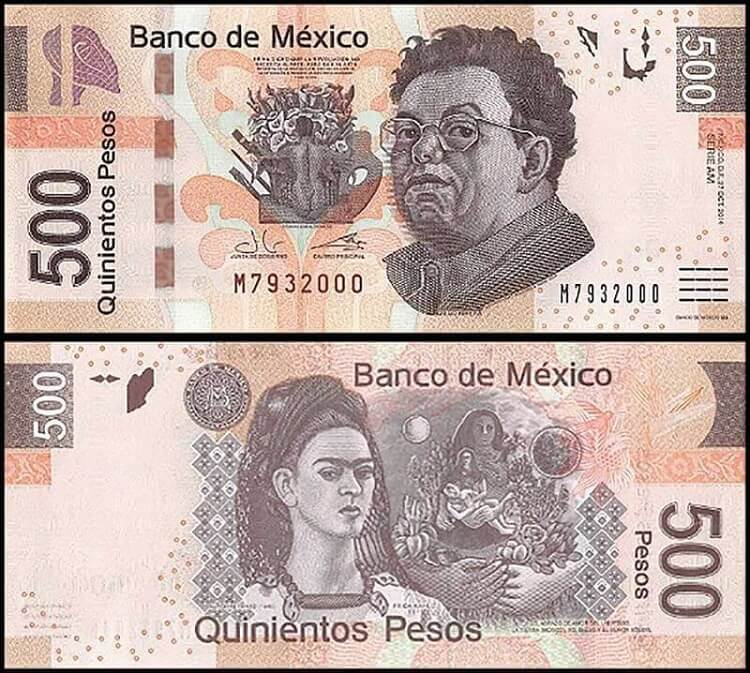

DISCLAIMERS: THIS SITE CONTAINS TOPICS THAT SOME MAY FIND OFFENSIVE. THEREFORE, I WISH TO MENTION THE FOLLOWING, AS A CAUTION TO THE READER.
1) CONTENT WARNING TO ABUSE SURVIVORS: ABUSE, GRAPHIC & GROTESQUE IMAGES, NUDITY, CULTS, RAPE, INCEST, TORTURE, PATRIARCHY, OBJECTIFIATION OF FEMALE BODY, VIOLENCE, MISOGYNY
2) GENERAL CONTENT WARNING: SUICIDE, RACISM, SEXISM, MISCARRIAGE, PORNOGRAPHY, OCCULT, ANTI-SEMITISM, HITLER, COMMUNISM, REVOLUTIONISTS
3) ARTWORK DISCLAIMER: I DO NOT OWN THE RIGHTS TO THESE ARTWORKS. I HAVE SPENT MANY HOURS READING, WATCHING, AND LISTENING TO SOURCES. I HAVE NERDED OUT A LOT! I HAVE BEEN CAPITIVATED BY BOTH THE ARTWORKS AND THE ARTISTS' STORIES BEHIND THE STUNNING CREATIONS! FIND MY SOURCES AND FURTHER READING ON THE SOURCES PAGE; AS WELL AS LINKS TO THE ARTISTS AND ARTWORKS THROUGHOUT THE WEBSITE.
Surrealism
Fun Facts! OKAY–Some of These are WEIRD Facts
-
Salvador Dalí
He had a very weird fascination with Hitler. Yes, THE HITLER!
He spent time with Elvis Presley, John Lennon, David Bowie, Pablo Picasso, Sigmund Freud and Alice Cooper. He even turned Cooper into a hologram! Check out gruenemann's video of the hologram! And Cooper's account of meeting his mythical hero, Dalí! Giraffe-skin vests, a diamond tierra and necklace, entrouage entrance and his surrealism.

He believed he was his dead brother's reincarnation and that his parent's only loved his brother's soul and not him. Well, he was named Salvador Dalí.
According to The Telegraph, his mustache was voted "best-known moustache of all time."
Dalí had an unusual marriage. In August 1929, he met the love of his life: Gala. Unfortunately, Gala was already married to the French surrealist poet Paul Eluard. Dali wasn't discouraged, since Gala and Eluard had what we might now term an "open marriage" with the artist Max Ernst. After divorcing Eluard (although they apparently continued a sexual relationship), Gala married Dali in 1934. They would remain together until her death in 1982. While it wasn't exactly a traditional marriage, another open marriage, the relationship was apparently a happy one. Gala became Dali's muse and business manager, her financial shrewdness supporting his extravagant lifestyle. The partnership was so important that Dali would frequently sign art with both of their names. In 1968, Dali bought Gala a castle in Spain, which she accepted ON THE CONDITION that he could only visit her there after obtaining HER WRITTEN PERMISSION!
Frida Kahlo
She became a painter after a near fatal accident. She suffered multiple fractures of her spine, collarbone and ribs, a shattered pelvis, broken foot and a dislocated shoulder. In her lifetime, she had 30 operations.
She is known as the master of Self-Portraits. In her career, Frida Kahlo created 143 paintings out of which 55 are self-portraits.
Her face is on the 500 Mexican peso bill; the other side is her husband, Diego Rivera.
According to IMDb, Frida Kahlo's niece was so impressed with the film that she gave Salma Hayek one of her necklaces.
Frida Kahlo was a bisexual. Her marriage with Rivera was tumultuous with both having multiple affairs. Frida had affairs with both men and women. Frida knew Diego was a serial adulter before she married him, but his affair with Kahlo's younger sister, Cristina, infuriated her. They divorced in 1939 but remarried a year later. Although their second marriage was as troubled as the first, Kahlo remained married to Rivera till her death.
For a sensual insight into how Kahlo allowed pain, torment, loss, grief and love to create masterpieces of art, check out the Oscar winning movie, "Frida," for FREE on Pluto.
She had a pet monkey.
Former British Prime Minister, Theresa May, MAY be part of "Fridamania" or she may have been making a political statement by wearing a hand-painted Frieda braclet.